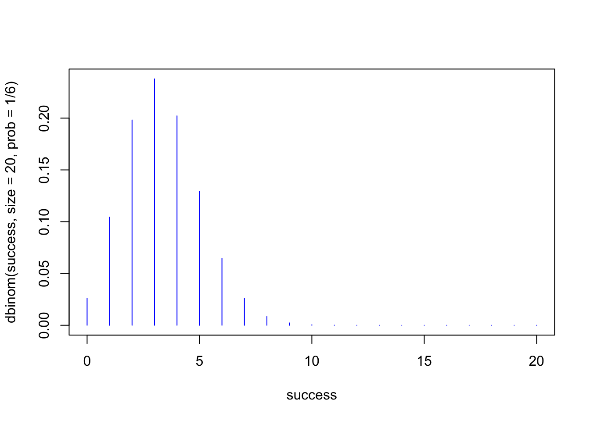
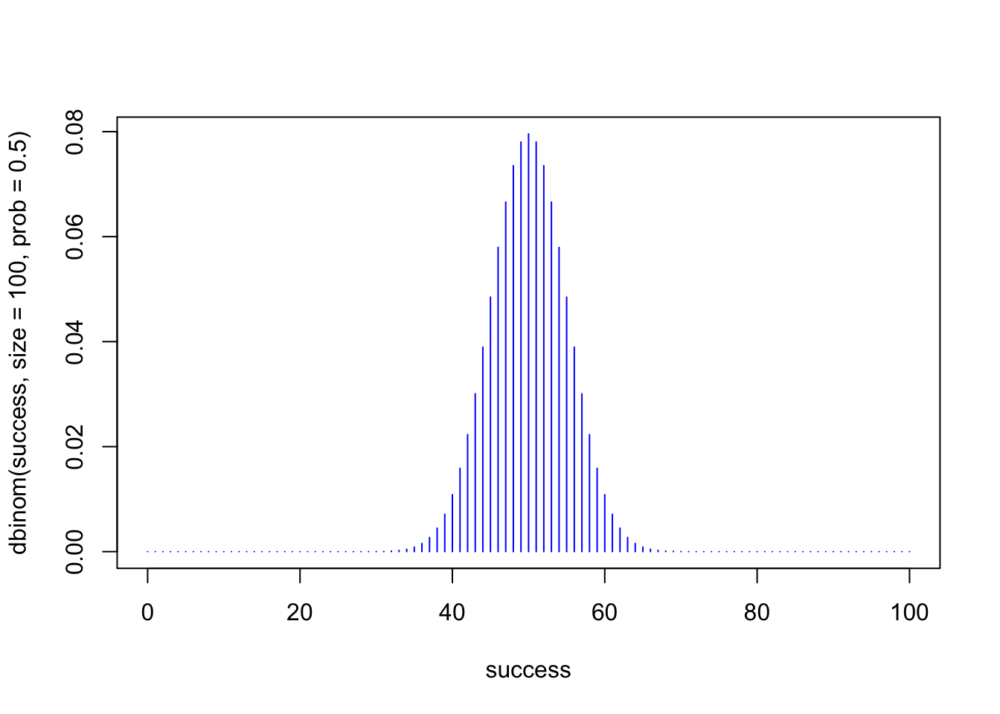

Probability Theory
James Van Slyke
Introduction to Probability
The foundation of statistics is probability, which is analyzing the chances that an event will or will not occur. Here is the basic formula for probability:
\[ p(A) = \frac{Number\ of\ events\ classifiable\ as\ A}{Total\ number\ of\ possible\ events} \]
We can start with a basic example using a deck of 52 playing cards. What’s the probability of drawing an Ace?
- What are the number of events classifiable as Ace?
A deck of playing cards has 4 aces of the four suits, hearts, diamonds, clubs, and spades. So our numerator is 4.
The total number of possible events or total number in a deck of cards is 52. So our denominator is 52. So we can write the equation like this: \[ p (Ace)=\frac{4}{52}\]
We can use R to find this probability
4/52## [1] 0.07692308Probabilities are always given in proportions or numbers between 0 and 1. If a given probability is 0 it is not possible for a particular event to occur while if a given probability is 1 it is certain that a particular event will occur. For example the probability of getting a 7 on one roll of a 6 sided die is 0 because the only possible outcomes on one roll of a six sided die is between 1 and 6. Whereas when you add together the probabilities of rolling a 1 through 6 together you get 1, because that is the total number of possible outcomes for a six sided die. To demonstrate, the probability of rolling a “4” on a six-sided die is one out of six or: \[p(4) = \frac{1}{6}\] Or in R
1/6## [1] 0.1666667So if we add together all the probabilities for each side of the die we’ll get 1. \[p(1) = \frac{1}{6} + p(2) = \frac{1}{6} + p(3) = \frac{1}{6} + p(4) = \frac{1}{6} + p(5) = \frac{1}{6} + p(6) = \frac{1}{6} = 1\] Or in R
1/6+1/6+1/6+1/6+1/6+1/6## [1] 1The Rules of Probability
There are two basic rules to probability, the addition rule and the multiplication rule. The addition rule applies to the single occurrence of two or more events. For example, what is the probability of drawing an Ace or a King on single draw from a deck of cards. In this case we add the probability of drawing an Ace and a King together to find the correct probability. Recall, that the probability for drawing an Ace looks like this:
\[ p (Ace)=\frac{4}{52}\]
The probability of drawing a king would be the same as an Ace because there are 4 Kings of each suit in the deck of cards, so the formula looks like this:
\[ p (Ace\ or\ a\ King)=\frac{4}{52} + \frac{4}{52}\]
So the probability of drawing an Ace or a King would be \(\frac{8}{52}\).
Using R we would find
4/52+4/52## [1] 0.1538462The multiplication rule applies for more than one draw or successive events. For example, what would be the probability of drawing an Ace on the first draw and a King on the second. In that case, you would mutlitply rather than add.
\[ p (Ace\ and\ a\ King)=\frac{4}{52} \times \frac{4}{51}\]
Notice, how in the second fraction the denominator is 51 rather than 52 to account for the fact that after you’ve drawn the Ace there are only 51 cards left. In this case, the second card is drawn without replacement.
4/52*4/51## [1] 0.006033183Binomial Distribution
Mathematics creates the ability to go beyond probabilities for single events and look at probability distributions or a set of probability values based on a certain number of events. Statistics is based on probability distributions that assign a particular probability to an observed outcome. In psychological science, probability distributions are used to analyze the probability of a particular outcome observed in an experiment. Different probability distributions are used for various statistical tests such as the t test, analysis of variance or ANOVA, and the chi-square test.
A good place to begin to understand probability distributions is the binomial distribution. For example, imagine you are flipping an evenly weighted coin. What’s the probability of getting heads? Let’s go back to our original formula.
Number of events classifiable as “heads” = 1
Total number of possible events = 2
Here’s the formula:
\[p(heads) = \frac{1}{2}\]
We can use R to get the proportion.
1/2## [1] 0.5What about the probability of getting 2 heads in a row on 2 flips of the coin? To analyze the probability of successive events or outcomes you need to multiply the probability for each event. This is called the multiplication rule for probability. So the formula looks like:
\[p(2heads) = \frac{1}{2}\times\frac{1}{2} = \frac{1}{4}\]
Using r we find:
1/2*1/2## [1] 0.25So we could go on and figure out the probability for 3 heads and 4 heads and so on, but instead the binomial distribution can provide a distribution of different probability values based on a given number of events. The binomial distribution is a just an extension of the mathematics we would need to do by hand to find the probability for different events and luckily, as usual, R is able to do this for us.
The function we’ll use is called dbinom(). The main
arguments for the function are:
x The number of outcomes for the given probability
currently being calculated
size The number of the overall size of the
experiment
prob The given probability value
So let’s calculate the original probability problem of two heads in two flips of a fair-sided coin. Notice that the answer is the same to the formula we used earlier.
dbinom(x=2, size = 2, prob = 1/2)## [1] 0.25Probabilities can be listed as fractions or proportions
dbinom(x=2, size = 2, prob = 0.5)## [1] 0.25We can also use it for other probability values such as rolling a six sided die, which has the probability value of \(\frac{1}{6}\)
dbinom(x=1, size = 1, prob = 1/6)## [1] 0.1666667Of course, it’s most helpful for probabilities for larger numbers of events. Like what’s the probability of rolling 4 sixes over 20 trials.
dbinom(x =4, size = 20, prob = 1/6)## [1] 0.2022036We can also represent this as distribution graph.
success <- 0:20
plot(success, dbinom(success, size=20, prob=1/6),type='h',
col = "blue")
Each of the lines represents the probability for a given outcome.
Notice how the outcome for rolling 4 sixes in 20 trials is around 0.20,
which was found in the original calculation using the
dbinom() function. The highest probability is to roll a “6”
three times out of 20 rolls of the dice. Notice how the graph of the
binomial distribution shows us the same answer as using the
dbinom() function.
dbinom(x=3, size = 20, prob = 1/6)## [1] 0.2378866After around 10 trials or rolls of the dice, the probability does a steep decline and stays very low, which would make sense. We can see the actual number by using R.
dbinom(x = 10, size = 20, prob = 1/6)## [1] 0.0004934846Rolling a “6” ten times out of 20 would not be a very probable outcome. You are much more likely to roll one of the other numbers (1 to 5) rather than 6 so many times.
Flipping a Coin
Most football games and soccer matches start with a coin flip to see who gets the ball first. A coin flip is a great way to think about probabilities. Let’s say it’s the first game of the season and you are the captain of the soccer team. You are asked to call the coin flip in the air and you call heads. What is the probability of your team starting with the ball?
dbinom(x = 1, size = 1, prob = 0.5)## [1] 0.5This probability was found earlier and it’s simply the original formula from a simple coin flip.
\[ p(heads)=\frac{1}{2} \]
Let’s imagine that you are the captain of the soccer team and you decide to go with heads every time you call the coin flip. If you got heads, 2, 3, or 4 times in a row, you would probably think you were pretty lucky, but what if you got it 25 times in a row? It would probably be on the nightly news and other teams would start to assume you were cheating. Intuitively, random outcomes seem normal and when someone gets lucky at something, persons begin to take notice. So if the captain of a soccer team picked heads 25 times in a row and got it right every time, that would be a very low probability. Let’s take a look:
dbinom(x = 25, size = 25, prob = 0.5)## [1] 2.980232e-08That would be a very, very low probability. It’s also easy to test. Take a quarter and flip it 25 times. How many times did you get heads? Someone may get it now and again, but not often.
Graphing the Binomial Distribution
The binomial distribution is helpful here. Let’s graph the distribution of getting heads over 25 trials.
success <- 0:25
plot(success, dbinom(success, size=25, prob=.5),type='h',
col = "blue")
Does this graph remind you of anything? It should because it takes on the shape of a normal curve. Notice that the lowest probabilities are for getting 4 or less heads and 21 or more heads. The highest probabilities are somewhere in the middle, half heads and half tails, which makes sense because the overall probability is 0.5 or \(\frac{1}{2}\). If we increase the number of trials the shape of the distribution is more pronounced and it looks more like a normal curve.
success <- 0:100
plot(success, dbinom(success, size=100, prob=.5),type='h', col = "blue")
So statistics uses distributions like the binomial distribution to look at the probability of different outcomes, similar to flipping a coin. Flipping a coin and getting heads about half the time is more probable than flipping a coin and getting a larger number of heads or a very small number of heads.